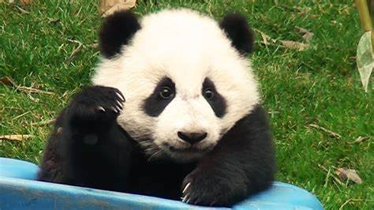

熊貓到底是什麼?
熊貓（Panda），又叫大熊貓（Giant panda）、貓熊， 係中國嘅國寶級野生哺乳動物。同熊、貓一樣屬於食肉目。 自從1869年一位法國傳教士第一次同熊貓改學名時叫做「黑白色嘅熊」之後， 學名好快就俾人改咗。事實上科學界仍然有爭議熊貓嘅分類。

從現在開始，我們將對你進行測驗，以了解更多關於大熊貓的信息！
第一題
當熊貓認真起來的時候，它能跑的最大速度是多少？
(1) 30公里/小時。(2) 50公里/小時。
(3) 9公里/小時。
正確答案是（1）！30公里/小時
當它真正開始行動時，它可以以大約30公里/小時的速度運行!
事實上，它們可以以你從它們的日常外觀中永遠猜不到的速度奔跑。
然而，他們的主食是竹子，幾乎不能用於營養，所以他們很少移動，以減少對身體的磨損。
當它真正開始行動時，它可以以大約30公里/小時的速度運行!
事實上，它們可以以你從它們的日常外觀中永遠猜不到的速度奔跑。
然而，他們的主食是竹子，幾乎不能用於營養，所以他們很少移動，以減少對身體的磨損。

第二題
熊貓一天能吃多少竹子？
(1) 約1噸(2) 約20-30公斤
(3) 約5-10公斤
正確答案是（2）! 約20-30公斤
日常飲食中大部分是竹子。這相當於高達20-30公斤的重量。 它們主要吃竹子，每天的分量大約是它們自己體重的1/4到1/5! 此外，他們對竹子的味道有清晰的感覺，當竹子的味道好時，他們會閉著眼睛吃。
日常飲食中大部分是竹子。這相當於高達20-30公斤的重量。 它們主要吃竹子，每天的分量大約是它們自己體重的1/4到1/5! 此外，他們對竹子的味道有清晰的感覺，當竹子的味道好時，他們會閉著眼睛吃。

第三題
熊貓每天平均要睡多久？
(1) 3小時(2) 12小時
(3) 23小時
正確答案是(2)!
嗜睡的人每天有一半時間在睡覺。 熊貓大部分時間都在睡覺，每隔幾個小時就吃東西和睡覺， 不分晝夜。留意他們睡覺時的可愛睡姿。
嗜睡的人每天有一半時間在睡覺。 熊貓大部分時間都在睡覺，每隔幾個小時就吃東西和睡覺， 不分晝夜。留意他們睡覺時的可愛睡姿。

第四題
大熊貓寶寶出生時平均體重是多少克？
(1) 約1200-1300克(2) 約500-600克
(3) 約100-200克
正確答案是（3）! 約100-200克
100-200克，它們非常小，可以放在人的手掌中！這就是為什麼我們要把它們放在一起。 出生時，他們沒有頭髮，全身都是粉紅色。它們在兩年內長到約60公斤，三年內長到近90公斤，雌性在4至5歲時達到成年（約100公斤），雄性在6至7歲時達到成年（約120公斤）。
100-200克，它們非常小，可以放在人的手掌中！這就是為什麼我們要把它們放在一起。 出生時，他們沒有頭髮，全身都是粉紅色。它們在兩年內長到約60公斤，三年內長到近90公斤，雌性在4至5歲時達到成年（約100公斤），雄性在6至7歲時達到成年（約120公斤）。

第五題
為什麼熊貓的眼睛周圍是黑色的？
(1) 曬傷(2) '太陽鏡'，以保護他們的眼睛免受陽光照射
(3) "眼妝 "要漂亮
正確答案是（2）! 太陽鏡 "以保護他們的眼睛不受陽光照射。
黑眼圈的原因是太陽鏡的替代品! 因為它們生活在雪山上，它們就像太陽鏡一樣，避免了雪地反射的刺眼光芒。 *有各種理論。
黑眼圈的原因是太陽鏡的替代品! 因為它們生活在雪山上，它們就像太陽鏡一樣，避免了雪地反射的刺眼光芒。 *有各種理論。